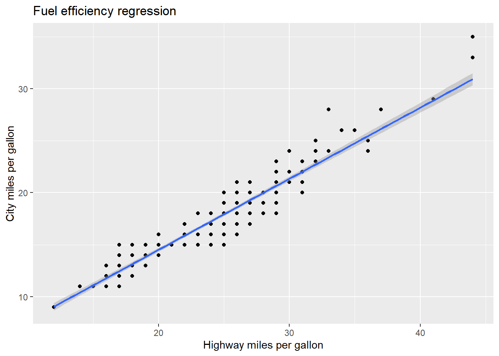
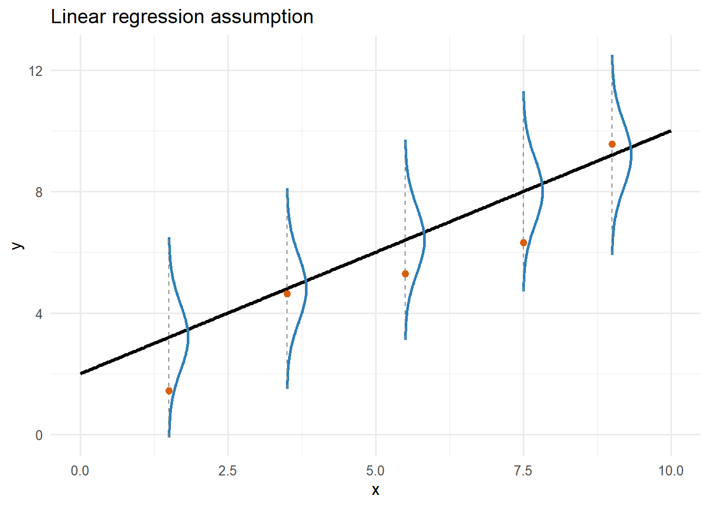

library(tidyverse)
ggplot(mpg,aes(x=hwy,y=cty))+
geom_point()+
stat_smooth(method="lm")+
labs(x="Highway miles per gallon",y="City miles per gallon",
title="Fuel efficiency regression")
Linear regression works with the method of least squares, which finds the values of the slope (a) and intercept (b) that minimize the difference between measured and predicted y. Here is some example data
library(tidyverse)
ggplot(mpg,aes(x=hwy,y=cty))+
geom_point()+
stat_smooth(method="lm")+
labs(x="Highway miles per gallon",y="City miles per gallon",
title="Fuel efficiency regression")
The regression equation is that the predicted value of y, \(\hat y=a+bx\)
The sums of squares algorithm is:
Here it is in an R function.
RegressionSS<-function(par,x,y) {
a<-par["a"]
b<-par["b"]
y_hat<-a+b*x
SS<-sum((y-y_hat)^2)
return(SS)
}
fit<-optim(par=c(a=0,b=1),
fn=RegressionSS,
x=mpg$hwy,
y=mpg$cty)
fit$par
a b
0.8457008 0.6831579
$value
[1] 363.8984
$counts
function gradient
75 NA
$convergence
[1] 0
$message
NULLThis gave us the same answer we would get from using the lm function in R.
lm1<-lm(cty~hwy,data=mpg)
summary(lm1)
Call:
lm(formula = cty ~ hwy, data = mpg)
Residuals:
Min 1Q Median 3Q Max
-2.9247 -0.7757 -0.0428 0.6965 4.6096
Coefficients:
Estimate Std. Error t value Pr(>|t|)
(Intercept) 0.84420 0.33319 2.534 0.0119 *
hwy 0.68322 0.01378 49.585 <2e-16 ***
---
Signif. codes: 0 '***' 0.001 '**' 0.01 '*' 0.05 '.' 0.1 ' ' 1
Residual standard error: 1.252 on 232 degrees of freedom
Multiple R-squared: 0.9138, Adjusted R-squared: 0.9134
F-statistic: 2459 on 1 and 232 DF, p-value: < 2.2e-16Likelihood of the parameters is the probability of getting the y data, give the x data and parameter values.
\(L(a,b,\sigma^2)=P(y_i|a,b,x_i)\sim normal(\hat y_i, \sigma^2)\)
The formula for the normal distribution is:
\(P(y|\mu,\sigma^2)=\frac{1}{\sqrt{2\pi\sigma^2}}e^{-\frac{(y-\mu)^2}{2\sigma^2}}\)
Because data points are independent, the likelihood multiplies across the data points.
\(L(\mu,\sigma^2|y) = \prod_{i=1}^{n}P(y_i|\mu,\sigma^2) = \prod_{i=1}^{n}\frac{1}{\sqrt{2\pi\sigma^2}}e^{-\frac{(y_i-\mu)^2}{2\sigma^2}}\)
Taking the log, we get.
\(\log L(\mu,\sigma^2|y) = -\frac{n}{2}\log(2\pi\sigma^2) - \frac{1}{2\sigma^2}\sum_{i=1}^{n}(y_i-\mu)^2\)
So, maximizing log likelihood is the same as minimizing sums of squares, plus some scaling parameters. In other words, the best fit parameters have the highest likelihood of having generated the data.
So, we can fit the model with likelihood as well. The likelihood algorithm is:
RegressionLL<-function(par,x,y) {
a<-par["a"]
b<-par["b"]
y_hat<-a+b*x
LL<-sum(dnorm(y,mean=y_hat,sd=1,log=TRUE))
return(-LL)
}
fit<-optim(par=c(a=0,b=1),
fn=RegressionLL,
x=mpg$hwy,
y=mpg$cty)
fit$par
a b
0.8416137 0.6833125
$value
[1] 396.9809
$counts
function gradient
71 NA
$convergence
[1] 0
$message
NULLThis is assuming that the y data are normally distributed around the mean predicted by \(\hat y\) with variance \(\sigma^2\).
# Demonstration plot:
# y_i ~ Normal(mu_i, sigma), where mu_i = b0 + b1*x_i
b0 <- 2
b1 <- 0.8
sigma <- 1.1
# Line domain
x_grid <- tibble(x = seq(0, 10, length.out = 300)) %>%
mutate(mu = b0 + b1 * x)
# Points along the line where we'll draw vertical normal densities
x_marks <- tibble(x = c(1.5, 3.5, 5.5, 7.5, 9.0)) %>%
mutate(mu = b0 + b1 * x)
# Build vertical density "ribbons" centered at each mu_i
# We parameterize over y, compute dnorm(y | mu_i, sigma), then convert to horizontal width.
density_curves <- x_marks %>%
rowwise() %>%
do({
xi <- .$x
mui <- .$mu
y_vals <- seq(mui - 3 * sigma, mui + 3 * sigma, length.out = 200)
tibble(
x0 = xi,
mu = mui,
y = y_vals,
dens = dnorm(y_vals, mean = mui, sd = sigma)
)
}) %>%
ungroup() %>%
mutate(
# Scale density to visible horizontal width in x units
x = x0 + dens * 0.9
)
# Optional: one simulated observation at each x_mark
set.seed(713)
obs <- x_marks %>%
mutate(y = rnorm(n(), mean = mu, sd = sigma))
ggplot() +
# regression line E[y|x] = b0 + b1*x
geom_line(data = x_grid, aes(x, mu), linewidth = 1.1, color = "black") +
# vertical normal density shapes at selected x values
geom_path(
data = density_curves,
aes(x = x, y = y, group = x0),
color = "#2C7FB8",
linewidth = 0.9
) +
# center lines showing each conditional mean mu_i
geom_segment(
data = x_marks,
aes(x = x, xend = x, y = mu - 3 * sigma, yend = mu + 3 * sigma),
linetype = "dashed",
color = "gray55",
linewidth = 0.4
) +
# optional simulated points
geom_point(data = obs, aes(x, y), size = 2, color = "#D95F0E") +
labs(
x = "x",
y = "y",
title = "Linear regression assumption"
) +
theme_minimal(base_size = 12)
Likelihood is much more general than sums of squares, and can be used with distributions other than the normal.